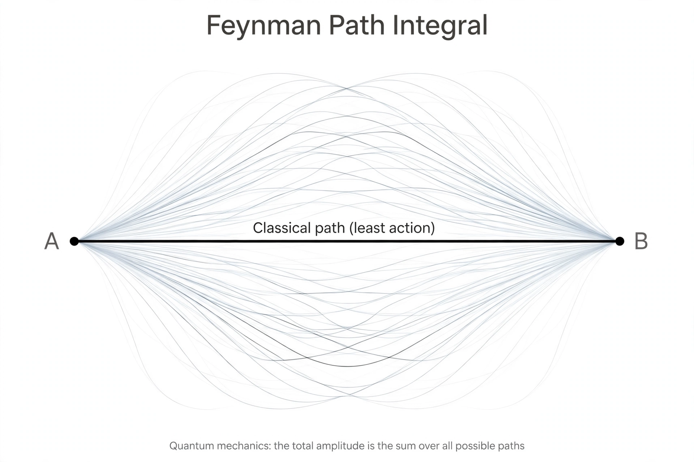

Path integral formulation

[Image: Illustration of many possible paths of a particle between two points, the classical path highlighted]The path integral formulation is a description in quantum mechanics, developed by Richard Feynman in the 1940s, that generalises the action principle of classical mechanics. It replaces the classical notion of a single, unique trajectory for a system with a sum, or functional integral, over an infinity of possible trajectories to compute a quantum amplitude.
Building on a hint in a 1933 paper by Paul Dirac and on Feynman's 1942 Princeton thesis (supervised by John Archibald Wheeler), the formulation was published in 1948 and became the basis of Feynman's approach to Quantum electrodynamics and Feynman diagrams. It is now a standard tool across quantum field theory, statistical mechanics and quantum gravity, and conceptually it is the physicist's favourite answer to 'what happens' in the Double-slit experiment.
Idea
To go from point A to point B, a particle is assigned an amplitude for every conceivable path, each weighted by a phase e^{iS/ħ}, where S is the classical action along that path. Adding the amplitudes (integrating over all paths) gives the total amplitude; squaring gives the probability. Where paths' phases vary wildly they cancel; near the classical path the phases align — so in the classical limit (large action compared with ħ) the particle follows the path of least action, recovering classical mechanics.
Uses
The path integral generates Feynman diagrams order by order in field theory; it handles gauge theories via the Faddeev–Popov method, underlies lattice QCD computations, and in its Euclidean (imaginary-time) form connects quantum mechanics to statistical mechanics (the basis of quantum Monte Carlo). Feynman and Hibbs's 1965 textbook Quantum Mechanics and Path Integrals remains the standard introduction.